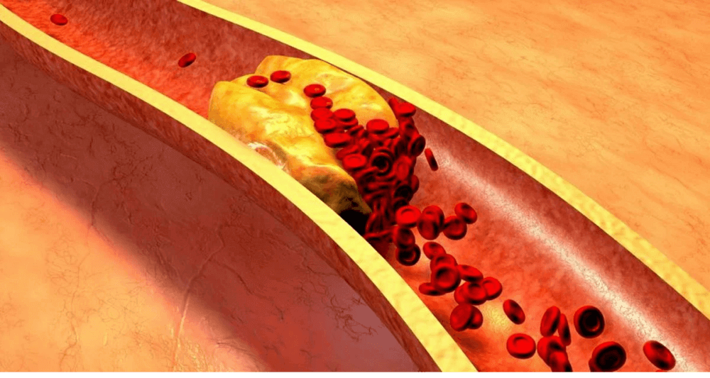
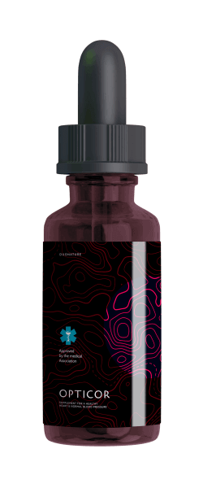

Tutti sanno che l'ipertensione, l’ictus e l’infarto sono le conseguenze dell
'"inquinamento" dei vasi sanguigni con il colesterolo. I vasi sanguigni sporchi sono la causa di 9 malattie
croniche su 10 presumibilmente incurabili. Quindi, cos'è l'ipertensione e come è pericolosa?
L'ipertensione è una malattia che colpisce un italiano adulto su tre. Allo stesso tempo,
la maggior parte della popolazione non è a conoscenza di questo problema e quindi non ricorre ad alcuna
prevenzione. Tra le persone consapevoli della propria malattia, molte non ricevono cure adeguate: assumono
farmaci in modo irregolare e in dosi troppo basse, o non assumono i farmaci per niente. Questo atteggiamento
nei confronti della propria salute causa numerose complicazioni potenzialmente letali.
Per evitare ciò, devi prima ottenere una risposta alle seguenti domande:

- Cosa dovrebbe sapere una persona ipertesa?
- Perché i vasi sanguigni sono responsabili dell'85% della tua salute?
- Cos'altro sta avvelenando i vasi sanguigni, tranne il colesterolo?
- 4 segni evidenti e 7 segni nascosti di cattivi vasi sanguigni.
- Come pulire in modo sicuro i vasi sanguigni a casa?
A queste domande ha risposto Massimo Massetti, è un cardiochirurgo italiano, attuale
direttore dell’Area Cardiovascolare e della Cardiochirurgia della Fondazione Policlinico A. Gemelli di
Roma, titolare della Cattedra di Cardiochirurgia dell'Università Cattolica del Sacro Cuore di Roma.
Bruno Cappelli: “Professore, lei dice sempre che i vasi
sanguigni sono responsabili dell'85% della salute del corpo? Perché è così? "
Massimo Massetti: “Qual è l'organo più grande del corpo umano? Pochi lo
sanno, ma in realtà l'organo più grande è il nostro sistema circolatorio. I vasi non sono solo tubi
attraverso i quali scorre il sangue. È un singolo organo complesso, il cui problemi portano immediatamente
alla sofferenza.
Quindi cosa succede se i vasi sanguigni non vengono
curati:
Vasi delle gambe malati - vene varicose, gonfiore persistente e
pesantezza continua alle gambe, sensazione di freddo oppure sensazione di bruciore insopportabile ai piedi.
I vasi ostruiti che alimentano il fegato - epatite. Dopo aver mangiato cibi grassi
- eruttazione amara.
Vasi sanguigni nelle articolazioni ,indeboliti e sporchi - cartilagine secca. Le
articolazioni si sfilacciano e fanno male, l'osteocondrosi travolge eccessivamente, compaiono
ernie.
I vasi anali si indeboliscono – l’emorroidi vengono ricoperti da protuberanze
viola.
Vasi degli occhi deboli – la vista si deteriora, increspature
negli occhi. Si sviluppa la cataratta.
E, naturalmente, la regina delle malattie vascolari, Sua Maestà -
l'ipertensione . L'ipertensione è la madre di un ictus e la sorella di un infarto.
«Non c'è felicità senza salute" - e non c'è salute senza vasi sanguigni puliti»
Ad esempio, il sovrappeso è strettamente correlato con i vasi sanguigni I vasi sanguigni
ostruiti dal colesterolo fano si che gli organi si nutriscono insufficientemente, i vasi sanguigni non
possono fornirli la quantità necessaria di nutrienti. A questo proposito, il cervello invia segnali -
bisogna mangiare. E agli organi manca ancora il cibo a causa dei vasi sanguigni ostruiti. Il cervello
comanda di nuovo - dobbiamo mangiare. Ancora e ancora.
Vuolete vivere una vita piena? Pulite e ripristinate i vasi sanguigni.I vasi sanguigni
puliti sono la chiave per superare il 90% delle malattie croniche, alcune delle quali sono considerate
incurabili.
«Se la sezione trasversale normale del vaso è lo
spessore di un dito, allora 5 kg di placche di colesterolo riducono la sezione trasversale alle dimensioni
di 4 fiammiferi.»
Bruno Cappelli: «Professore, tutti sanno che il
colesterolo fa male. È lui che ostruisce i nostri vasi, limita il flusso sanguigno e interrompe la
circolazione sanguigna. Ma la colpa non e' solo la sua?»
Massimo Massetti: «Si, esattamente. Placche di
colesterolo, note anche come “placche aterosclerotiche”», sono responsabili di circa il 60-70%
dell'inquinamento vascolare.All'età di 50 anni, si accumula fino a 5 kg di placche di colesterolo.I depositi
di colesterolo limitano il flusso sanguigno nei vasi di 4-5 volte.

Se ha più di 45 anni e non ha mai preso un nutraceutico per purificare i vasi sanguigni,
Le garantisco che ha i problemi con vasi sanguigni.I vasi sanguigni sono ostruiti da colesterolo, coaguli di
sangue - processi di invecchiamento quasi naturali. Naturalmente, il cibo, le pillole, il fumo e l'alcol di
oggi accelerano il processo di intasamento di 5-8 volte. Il minimo stress, il cambiamento del tempo, le
tempeste, immediatamente influiscono sulla sua salute. Aumenta la pressione , vertigini, tinnito, la testa
inizia a martellare, dolore alle articolazioni.
4 malattie causate dai vasi sanguigni malati:
- 1. "Ipertensione"
Il sintomo principale dell'ipertensione è mal di testa.
Ciò è dovuto al restringimento dei vasi sanguigni nel cervello. Inoltre, i sintomi frequenti
dell'ipertensione sono una sensazione di pesantezza alla testa, palpitazioni e vertigini.
- 2. "Le vene varicose"
Le vene alle gambe gonfie, deformi e innaturali,
pesanti e dolorose. Colesterolo e coaguli di sangue ostruiscono le vene. A poco a poco compaiono
negli occhi "le stelle" vascolari, che poi si trasformano in una "rete" vascolare.
- 3. "L’emorroidi"
Quando i vasi di drenaggio dell'ano si intasano, le
emorroidi si gonfiano. Se i vasi sanguigni sono prima ostruiti dopo si verificano crepe nell'ano e
poi rottura.
- 4. "Osteocondrosi"
E’ una mancanza di circolazione sanguigna nella
cartilagine. La cartilagine si indurisce e inizia a consumarsi, sensa avere il tempo per
riprendersi. Perde la sua capacità di supporto. I sali non vengono lavati via e iniziano ad
accumularsi in modo incontrollabile formando una crescita di cisti.
7 segnali di pericolo:
- 1. "Edema"
La sera, le gambe si gonfiano, i calzini stringono le
caviglie, lasciando segni. Viso gonfio e borse sotto gli occhi. Il gonfiore indica che suoi organi
sono gonfi.
- 2. "Tinnito"
Da uno squittio appena percettibile ai forti urla che
impediscono di concentrarti. Queste sono le conseguenze dell'aumentata pressione dei vasi cerebrali
che premono sul timpano.
- 3. "Vertigini"
La sensazione di "ubriachezza", acuti e improvvisi
attacchi di vertigini, indicano che l'apparato vascolare sta "sofrendo di fame". Anche l'udito
soffre spesso.
- 4. "Insonnia"
Vi sentite assonnati e letargici ma non riuscite a dormire?
Il motivo è un insufficiente apporto di sangue alla ghiandola pituitaria. Smette di produrre
melatonina – l'ormone del sonno..
- 5. "Stanchezza"
Non ci sono le forze. Non hai voglia di fare niente.
Voglio solo sdraiarmi. Questa sensazione si verifica quando il tuo corpo entra in modalità di
risparmio d'energetico. I tuoi organi non ricevono abbastanza nutrimento attraverso i vasi sanguigni
contaminati e il tuo corpo cerca di ridurre i livelli di attività per evitare di morire.
- 6. "Problemi di vista"
«Mosche» davanti agli occhi, oscurità e nebbia
negli occhi. Questi sono sintomi di insufficienza vascolare degli occhi.
- 7. "Dolori articolari"
A causa del tempo - dolori alle articolazioni.
Quando ti svegli al mattino, non ti senti allegro e riposato, ma come uno storpio intorpidito e
mezzo paralizzato. Il liquido sinoviale perde le sue proprietà, incolla le articolazioni, come la
colla.
Usualmente le persone, in diverse combinazioni, hanno piu' sintomi contemporaneamente. Allo stesso tempo
hanno in diverse combinazioni anche diversi sintomi. Poveretti cercano di curare ciascuna malattia
separatamente. Pillole per la pressione, creme per le vene varicose, i medicinali per l'emorroidi, gel
per l'osteocondrosi. E, naturalmente, antidolorifici. Buttano solo i soldi a vuoto per spendere in Ma la
causa di tutte le malattie sempre uguale - sono i disturbi circolatori. Bisogna iniziare con una pulizia
generale dei vasi sanguigni.
«La maggior parte dei farmaci non aiuta e non cura,
ma indebolisce e danneggia»
Bruno Cappelli: «Qual è il modo più efficace per
pulire i vasi sanguigni da colesterolo, coaguli e calcificazioni?»
Massimo Massetti: «Per la pulizia sicura dei vasi
sanguigni, posso citare solo un prodotto con una reputazione impeccabile - « » . Allunga la vita di 12-17 anni,
aggiungendo energia e relax.
« » - è un prodotto naturale al 100% a
base di estratti vegetali che risveglia le particelle viventi al contatto con l'acqua. Questi piccoli agenti
di pulizia rimuovono il muco di colesterolo dai vasi sanguigni, così come i coaguli che si attaccano alle
pareti: calcificazioni, residui di farmaci. Tutto ciò che interferisce con il libero flusso del sangue.
L'inquinamento accumulato negli anni che avvelena la nostra vita, viene sciacquato fuori con " " dopo 1,5-2 mesi di assunzione regolare.
Insieme a loro scompare il mal di testa e l'acufene (fischi nelle orecchie). Il cervello,
adeguatamente e 'alimentato da vasi puliti, funziona alla velocità di un supercomputer. I pensieri sono
chiari e precisi.
La sensazione si intensifica, sentite i suoni piacevoli a cui prima non prestavate
l'attenzione. L'udito migliora, si puo' persino capire una conversazione tranquilla in un'altra stanza.
Gli aromi giocano con nuovi colori. La respirazione è libera e uniforme. L'aria fresca
riempie i polmoni, si diffonde attraverso il corpo in onde piacevoli, provocando una sensazione di lieve
euforia.
Il gusto diventa luminoso e ricco. Il semplice cibo vi darà un grande piacere. Mangiate
meno, il corpo si satura più velocemente. Il desiderio costante di dolci e grassi scompare.
Le articolazioni non fanno più male. "Lo scricchiolio” scompare completamente, e al suo
posto si hanno i movimenti fluidi,grazie alla rinnovata idratazione articolare."
Bruno Cappelli: «Impressionante. In effetti, questa
è la prima volta che sento parlare di " ". Pero, in
generale ho sentito parlare di nutraceutici. In Giappone e Israele, hanno ufficialmente approvato i
nutraceutici come trattamento preferito. E in Italia, questi farmaci non sono ancora considerati affidabili.
Perche?»
Massimo Massetti: «Lascia che ti racconti un racconto
ammonitore sulla sfiducia. Nel 1928 fu inventato il primo antibiotico - la penicillina. Ha curato facilmente
la dissenteria e il tifo, da cui le persone morirono inevitabilmente.
Tuttavia, la maggior parte delle persone non credeva che potesse aiutare, perché erano già
state scoraggiate 100° volte cercando di curarsi da queste malattie in passato. Si sono ripresi quelli, chi
è rimasto deluso 100 volte e non ha avuto paura del 101° tentativo. E quelli, che si sono arresi, agitarono
le mani, dicendo: «Un'altra cura miracolosa che non aiuterà», sono morti, anche se la loro salvezza era
proprio sotto il loro naso.
Come una volta la penicillina sconfiggeva le malattie prevalenti a quel tempo:
dissenteria, tifo e peste polmonare. Cosi, come nel tempo «
» eliminerà le malattie vascolari. Sono già stati compiuti i primi passi - Giappone,
Canada, Corea, Svizzera e Israele - hanno introdotto una legge sulla pulizia dei vasi sanguigni con
nutraceutici invece della terapia farmacologica. In Italia «
» è ufficialmente prescritto solo in un luogo - in un ospedale di Roma. È in quello, in cui
viene curata «il fior fiore della società» - i ministri, deputati, celebrità e altre élite. Vengono curati
secondo i protocolli israeliani. Il Ministero della Salute offre al resto dei nostri cittadini cure con
preparati chimici, prodotti da fabbriche appartenenti alla stessa élite.»
«I nostri dubbi -sono traditori , e a causa loro
perdiamo molto di quello, che potremmo ottenere, per paura di provarci».
Bruno Cappelli: «Cosa succede quando inizio il
corso di pulizia con " "? Come funziona questo prodotto
?»
Massimo Massetti: «Quando le molecole " " sono piene di umidità e ossigeno, gli estratti
medicinali acquisiscono l'effetto del perossido di idrogeno - ossigenazione». Le molecole di « e» - sono minuscole bombe di ossigeno. Fanno
esplodere le partizioni di colesterolo nei vasi sanguigni e consentono al sangue di scorrere liberamente.
Questo è il motivo per cui « » è così efficace - voi
bevete estratti vivi, che funzionano attivamente. La composizione delle gocce fornisce un assorbimento
immediato delle particelle viventi. Gli estratti ossigenati vengono prontamente assorbiti dalle pareti
dell'esofago. Per cui « e» non provoca bruciore di
stomaco, amarezza in bocca, eruttazione, non irrita l'intestino и e protegge lo stomaco. Anche con
un'ulcera, bevete liberamente « ».
«
» - è un tesoro di rari estratti medicinali, che lavorano armoniosamente per la purezza e la
forza dei vasi sanguigni»
Come cambierà la vostra condizione di benessere:
PULISCE I VASI SANGUIGNI
La cardiaca comune rimuove il colesterolo. Come uno scalpello, le molecole della sostanza
martellano le particelle di colesterolo, che sono aderenti alle pareti dei vasi sanguigni. Il flusso
sanguigno diventa libero. La cartilagine finalmente cominciano «nutrirsi». Scompaiono la macinatura e lo
scricchiolio nella parte del collo, schiena e le articolazioni. Le ginocchia e dita dei piedi non fanno più
male a causa del tempo.
Il flusso sanguigno della pelle si riprenderà - le stelle e la rete vascolare
scompariranno. Le vene varicose gradualmente diminuiscono, le emorroidi si seccano.
ARRIVA L'ENERGIA
Entrano in gioco le molecole di estratto di Kumquat (Fortunella). Intrappolano le
particelle di colesterolo ed attaccandosi ad esse, si trasformano in utili lipoproteine ad alta densità, le
quali sono coinvolte nella scomposizione dei grassi.
« » con un colpo uccide le due lepri -
rimuove il colesterolo che inquina i vasi sanguigni e stimola la corretta combustione dei grassi. Grazie a
questo senti una potente ondata di forza, viene voglia di muoverti.
RIDUZIONE DELLA TENSIONE
L'antiossidante-tocoferolo vitamina B2 rimuove gli spasmi dei vasi sanguigni. È come «la
valeriana» per i vasi sanguigni. Rilassa e lenisce i vasi sanguignii quali sono stretti a causa di mancanza
di flusso sanguigno. La pressione torna alla normalità in modo fluido e sicuro. Scompaiono: il mal di testa
, l'acufene si attenua, i polmoni e i bronchi funzionano facilmente , senza intoppi.
SCARICA IL CUORE
Foglie e fiori di olivello spinoso puliscono i vasi sanguigni dai coaguli di sangue. Il
larice diluisce il sangue. Anche i piccoli aneurismi si scioglono. Lava via i depositi di calcio, che erano
lasciati dalle sostanze chimiche.
L’EFFETTO DELLA FARFALLA
« » è come il battito delle ali di una
farfalla, che provoca una reazione a catena eccitante lo spirito di cambiamento. Passo dopo passo « » lancia una reazione a catena, che purifica il
corpo, cominciando dalla depurazione dei rifiuti accumulati per decenni nei vasi sanguigni.
FACILE RISVEGLIO
Vi svegliate la mattina e ti alzi facilmente dal letto - non dovete sforzarti ad alzarvi ,
trascinando e strofinando le gambe incatenate, scricchiolio schiena e collo.
FORZA NELLE GAMBE
Quando uscite di casa, non dovete più preoccuparvi dei vostri piedi - camminare non è un
problema. Potete camminare tutto il giorno , e le vostre gambe non si stancano o non si gonfiano.
PACE ASSOLUTA
Siete completamente calmi e rilassati. Non c'è più dolore costante, assorbente la vostra
coscienza, impedendovi di concentrarvi su qualsiasi altra cosa. Quando nulla fa male, cose comuni, i suoni e
gli odori traboccono di impressioni a lungo dimenticate.
CHIAREZZA DELLA MENTE
Anche dopo una dura giornata di lavoro tornate a casa con una mente chiara e brillante. Il
cervello funziona come un orologio svizzero, senza sentirsi stanco.
Il SONNO IDEALE
E ora, sdraiatevi nel letto, vi addormentate velocemente e piacevolmente. Sono finiti i
giorni , in cui vi agitavate nel letto per metà della notte, girando costantemente il cuscino, e il sonno
non veniva lo stesso. Ora è tutto semplice - decidete voi, quando addormentarvi, e il corpo obbedisce ai
vostri comandi.
«È un modo straordinario e naturale per trattare varie malattie e
migliorare la vita quotidiana di una persona. E devi trovare un modo per farlo aggiungere nella tua
vita.»
Il programma agevolato «Vasi puliti» (attivo dal 2021).
« » non è più venduto
nelle farmacie.
La causa del conflitto è stata l'avidità della catena farmaceutica, che ha chiesto al produttore « » ulteriori per ogni prodotto venduto! Pur
sapendo già dell'alto margine sul prezzo del produttore (il costo dell « »
in alcune farmacie di Roma ha raggiunto i 120 euro), le compagnie farmaceutiche volevano introdurre una
tariffa aggiuntiva per al produttore.
I rappresentanti delle farmacie si giustificano - che, tale supplemento consente a loro di sopravvivere.
Perche' «» - è un farmaco, che viene acquistato ogni 7-10 anni. Inoltre, dopo aver pulito i vasi
, la persona non ha più bisogno di medicine che ha costantemente preso prima! Le persone smettono di
abbassare la pressione sanguigna e non acquistano piu gli antidolorifici.significativamente riducono
l'assunzione di farmaci per il diabete. E questo porta le farmacie alle perdite. Per questo « » richiede il prezzo più alto.
Di conseguenza, il produttore di " " - ha interrotto
i contatti con tutte le farmacie и ed è passato alla distribuzione solo tramite Internet. In primis ,è
giusto. Giudicate voi: non è necessario pagare l'affitto , le farmacie non hanno bisogno di tangenti,
per vendere questo prodotto. Quindi «А-cardin» ora e ' disponibile come offerta speciale.
La nostra università, insieme al Centro Nazionale di Ricerca Medica della Chirurgia Cardiovascolare ed
insieme al produttore di « » hanno lanciato un
programma agevolato nell'ambito del progetto di telemedicina (Medicina-Internet).
Chiunque può iscriversi per avere «
» a condizioni previlegiate, l'offerta e' valida fino al
incluso, o alla fine della scorta presso il magazzino regionale « ». E
tutto questo nonostante la mancanza di pubblicità su radio e televisione. Le persone condividono
informazione, consigliano a familiari e amici.
Termini di utilizzo « ».
Candidarsi tramite il modulo sul nostro sito ufficiale.
Tutto ciò è stato fatto per combattere la
speculazione su questo prodotto dove gli intermediari cercavano di acquistare «
» in grandi quantità e rivenderlo con il proprio margine.
Candidarsi tramite il modulo ufficiale del nostro
programma. Il modulo di domanda ufficiale - è una garanzia di qualità e protezione dagli speculatori.
